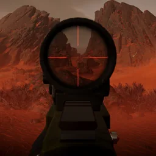
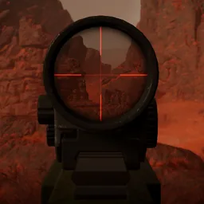
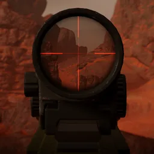

2倍管状红点瞄准镜
可用性
| Weapon | 解锁等级 | 解锁费用 |
|---|---|---|
| 审判者 | 武器等级 1 |  0 0 |
| Double-Edge Sickle | ||
| 解放者 | ||
| One-Two | ||
| Scythe | ||
| Sickle | ||
| Tenderizer | ||
| Variable | ||
| Hyena | 武器等级 18 | 13,000 |
| Trident | ||
| Pacifier | 武器等级 19 | 7,000 |
| Stoker | ||
| Eruptor | 13,000 | |
| 解放者 Concussive | ||
| Sweeper | 武器等级 22 | |
| 捍卫者 | 武器等级 23 | 25,000 |
| 解放者 Penetrator | ||
| Gallant | 武器等级 24 | |
| Knight | ||
| Pummeler |
媒体

First-Person (25 Meters)
First-Person (50 Meters)
First-Person (100 Meters)
变更历史
补丁
描述
1.005.000
2025-12-02
变化
- 人体工学性能修正值从(-3)降低至(-1)
配件
2x Tube Red Dot • 10x Sniper Scope • 4x Combat Scope • 全息瞄准镜 • 反射式瞄准镜 • 无准镜 • 反射式瞄准镜 Mk2 • 1.5x Tube Red Dot • 机械瞄具